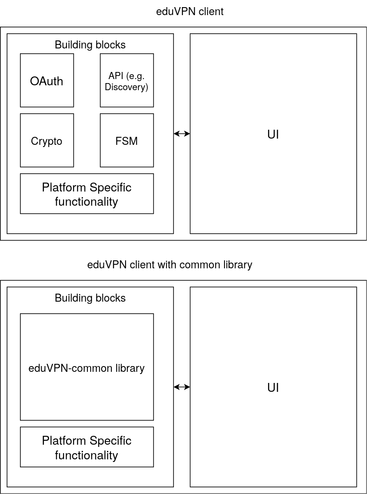

About
This chapter contains background information for the library. We give a general introduction to eduVPN and explain what problems this library aims to solve.
EduVPN introduction
eduVPN-common is a library for eduVPN, which is a VPN by SURF and a project by GÉANT, for research institutes and universities. Each institute that uses eduVPN has its own server. To discover these servers and establish a VPN connection with them, eduVPN clients are used. eduVPN has clients for each common platform:
The problem
However, as these clients are rather similar in functionality, apart from platform specific differences, right now there is duplicate code between them. For example, the process to discover institution's servers, the authorization process (OAuth) and Wireguard key generation. This goal of this library is to provide the common functionality between these clients into one codebase. The library is written in the Go language and aims to have wrapper code for each of the languages that are used by the current clients.
The main goal is thus the following: 
This library tries to remove non-platform specific common functionality. This way eduVPN clients have less duplicate code. The building blocks that are removed by the library is not just the four depicted in this figure. You can think of other building blocks, such as logging and local configuration file saving. As can be seen in the figure, no User Interface (UI) code will be implemented. This is left to the eduVPN clients, on top of platform-specific code.
License
Authors
This library is written by Steven Wallis de Vries and Jeroen Wijenbergh at the SURF and GÉANT organization.
Getting started
This chapter contains the steps to get started with the Go library and the Python wrapper. You will learn how to build the library/wrapper, how to run the test suite and how to debug possible errors.
Note that the Python wrapper is currently the only wrapper. So for now, we only document the Python wrapper in this documentation and in the future document the other wrappers as well.
The documentation on how to use this library in your own code will be given in the next chapter: API.
Building
This section contains the instruction on how to build the library and associated wrappers. We first explain how to build the Go library and then further explain the wrapper specific building process. As the Python wrapper is the only wrapper at the moment, this only consists of this wrapper language for now.
Building the Go library
To build the Go library, you need the dependencies for your system installed. We will go over the needed dependencies for Linux. Afterwards, we explain the basic commands to build the library.
Dependencies
Linux
To build the Go shared library using Linux you need the following dependencies:
Commands
Before we can begin building the wrapper code, we need to build the Go code as a shared library. This section will tell you how to do so.
To build the shared library for the current platform issue the following command in the root directory:
make
The shared library will be output in lib/.
Cleaning
To clean build the library and wrapper, issue the following command in the root directory:
make clean
Note on releases
Releases are build with the go tag "release" (add flag "-tags=release") to bundle the discovery JSON files and embed them in the shared library. See the make_release script on how we bundle the files. A full command without the Makefile to build this library is:
go build -o lib/libeduvpn_common-${VERSION}.so -tags=release -buildmode=c-shared ./exports
Python wrapper
To build the python wrapper issue the following command (in the root directory of the eduvpn-common project):
make -C wrappers/python
This uses the makefile in wrappers/python/Makefile to build the python file into a wheel placed in wrappers/python/dist/eduvpncommon-[version]-py3-none-[platform].whl. Where version is the version of the library and platform is your current platform.
The wheel can be installed with pip:
pip install ./wrappers/python/dist/eduvpncommon-[version]-py3-none-[platform].whl
Example: commands to build for Python
This section gives an example on how to build and install the library from scratch (assuming you have all the dependencies). It builds the Go library and then builds and installs the Python wrapper.
- Clone the library
git clone https://github.com/eduvpn/eduvpn-common
- Go to the library directory
cd eduvpn-common
- Build the go library
make
- Build the python wrapper
make -C wrappers/python
- Install the wheel using pip
# x.x.x is the version here
pip install wrappers/python/dist/eduvpncommon-x.x.x-py3-none-linux_x86_64.whl
Note that the name of your wheel changes on the platform and version.
Package formats
We support the following additional package formats: RPM (Linux, Fedora) and Deb (Linux, Debian derivatives)
Linux: RPM
The RPM files can be found on a SourceHut Repo.These are then build with builder.rpm.
Linux: Deb
The RPM files can be found on a SourceHut Repo. These are then build with nbuilder.deb.
Building for release
To build for release, make sure you obtain the tarball artifacts in the release (ending with .tar.xz) at https://github.com/eduvpn/eduvpn-common/releases.
These are signed with minisign and gpg keys, make sure to verify these signatures using the public keys available here: https://github.com/eduvpn/eduvpn-common/tree/main/keys, they are also available externally:
- https://app.eduvpn.org/linux/v4/deb/app+linux@eduvpn.org.asc
- https://git.sr.ht/~jwijenbergh/python3-eduvpn-common.rpm/tree/main/item/SOURCES/minisign-CA9409316AC93C07.pub
To build for release, make sure to extract the tarball, and then add -tags=release to the GOFLAGS environment variable:
GOFLAGS="-tags=release" make
Proceed the build like normally.
Testing
The Go library right now has various tests defined. E.g. server interaction, oauth, discovery and signature verification tests.
To run the Go test suite, issue the following command in a shell
make test
Note that this runs the tests without any server interaction (so for now only the signature verification tests). To run the tests with an eduVPN server you need to specify environment variables:
SERVER_URI="eduvpn.example.com" PORTAL_USER="example" PORTAL_PASS="example" make test
This needs python3-selenium and geckodriver (extract and put in your $PATH). Note that testing with a server assumes it uses a default portal, due to it needing to click on buttons on the web page. You can add your own portal by customizing the called Selenium script.
If you have Docker installed and Docker-compose you can use a convenient helper script which starts up two containers
- An eduVPN server for testing
- A Go container that builds and runs the test-suite
PORTAL_USER="example" PORTAL_PASS="example" ./ci/startcompose.sh
Note that this helper script also assumes you have the OpenSSL command line tool installed. This is used to install the self-signed certificates for testing.
This script is also used in the continuous integration, so we recommend to run this before you submit any changes.
There are other environment variables that can be used:
OAUTH_EXPIRED_TTL: Use this for a server which has a low OAuth access token expiry time, e.g. 10 seconds. You would then set this variable to"10"so that a test is ran which waits for 10 seconds for the OAuth tokens to expireEDUVPN_PODCOMP: Set this to 1 to instruct the./ci/startcompose.shscript to use podman-compose if you prefer this over using docker-compose.
Testing the Python code
To test the Python code, issue the following command in a shell (you will need dependencies for all wrappers if you do this1):
make -C wrappers/python test
API
This chapter is an introduction to the eduvpn-common API. It is meant as a high-level overview on how to use API and build your own eduVPN/Let's Connect! client. In this chapter, we go over the basics of how the interop between Go and language x works, say something about the architecture, explain where to find detailed API documentation, explain the state machine, give a typical flow for a client and give a follow along tutorial on building an eduVPN client using Python code. At last, we will also have a few code examples that can be used as a short reference.
Go <-> language X interop
Because this library is meant to be a general library for other clients to use that are written in different programming languages, we need to find a way to make this Go library available on each platform and codebase. The approach that we take is to build a C library from the Go library using Cgo. Cgo can have its disadvantages with performance and the constant conversion between Go and C types. To overcome those barriers, this library has the following goals (with some others noted here):
- Be high-level. Functions should do as much as possible in Go. The exported API should fit in one file. Lots of low-level functions would be a constant conversion between C and Go which adds overhead
- Move as much state to Go as possible. For example, Go keeps track of the servers you have configured and discovery. This makes the arguments to functions simple, clients should pass simple identifiers that Go can look up in the state
- Easy type conversion: to convert between C and Go types, JSON is used. Whereas Protobuf, Cap'n'proto or flatbuffers are more performant, they are harder to debug, add thousands of lines of autogenerated code and are not human friendly. Using JSON, the clients can approach it the same way they would use with a server using a REST API. Another approach is to just convert from Go -> C types -> language types. This was tried in version 1 of the library, but this ended up being too much work and manual memory management
- Make it as easy as possible for clients to manage UI and internal state: we use a state machine that gives the clients information in which state the Go library is in, e.g. we're selecting a server profile, we're loading the server endpoints. This library is not only a layer to talk to eduVPN servers, but the whole engine for a client
- Implement features currently not present in existing clients: WireGuard to OpenVPN failover, WireGuard over TCP
- Follow the official eduVPN specification and also contribute changes when needed
- Secure: We aim to follow the latest OAuth recommendations, to not store secret data and e.g. disable OpenVPN scripts from being ran by default
And finally the most important goal:
- The advantages that this library brings for clients should outweigh the cost of incorporating it into the codebase. Initial versions would take more work than we get out of it. However, when each eduVPN/Let's Connect! client uses this library we should expect a net gain. New features should be easier to implement for clients by simply requiring a new eduvpn-common version and using the necessary functions
Architecture
In the previous section, we have already hinted a bit on the exact architecture. This section will expand upon it by giving a figure of the basic structure
graph TD; A[Go]-- Compiles to -->B[C shared library .so/.dll]; C[Language wrapper]-- Loads -->B Client -- Uses --> C;
As can be seen by this architecture, there is an intermediate layer between the client and the shared library. This wrapper eases the way of loading this library and then defining a more language specific API for it. In the eduvpn-common repo, we currently only support a Python wrapper. Clients themselves can define their own wrapper
Typical flow for a client
NOTE: This uses the function names that are defined in the exports file in Go. For your own wrapper/the Python wrapper they are different. But the general flow is the same
- The client starts up. It calls the
Registerfunction that communicates with the library that it has initialized - It gets the list of servers using
ServerList - When the user selects a server to connect to in the UI, it calls the
GetConfigto get a VPN configuration for this server. This function transitions the state machine multiple times. The client uses these state transitions for logging or even updating the UI. The client then connects- New feature in eduvpn-common: Check if the VPN can reach the gateway after the client is connected by calling
StartFailover
- New feature in eduvpn-common: Check if the VPN can reach the gateway after the client is connected by calling
- If the client has no servers, or it wants to add a new server, the client calls
DiscoOrganizationsandDiscoServersto get the discovery files from the library. This even returns cached copies if the organizations or servers should not have been updated according to the documentation- From this discovery list, it calls
AddServerto add the server to the internal server list of eduvpn-common. This also calls necessary state transitions, e.g. for authorizing the server. The next call toServerListthen has this server included - It can then get a configuration for this server like we have explained in step 3
- From this discovery list, it calls
- When a configuration has been obtained, the internal state has changed and the client can get the current server that was configured using
CurrentServer.CurrentServercan also be called after startup if a server was previously set as the current server. - When the VPN disconnects, the client calls
Cleanupso that the server resources are cleaned up by calling the/disconnectendpoint - A server can be removed with the
RemoveServerfunction - When the client is done, it calls
Deregistersuch that the most up to date internal state is saved to disk. Note that eduvpn-common also saves the internal state .e.g. after obtaining a VPN configuration
Where to find API docs
The API documentation, depends on which wrapper you are using. If you're writing a wrapper yourself, or want some background information on how it works internally, you can find function docs in the exports/exports.go file it is available as autogenerated form here.
This file is commented using Go comment style. It gives a basic of what the function does, what it returns and what type of arguments you should pass to it. The API documentation for the Python wrapper can be found here.
There is also a Go API that is defined in the client package. However, this is not the primary use case for the library.
Finite state machine
The eduvpn-common library uses a finite state machine internally to keep track of which state the client is in and to communicate data callbacks (e.g. to communicate the Authorization URL in the OAuth process to the client).
Viewing the FSM
To view the FSM in an image, register to the library with in debug mode. This
outputs the graph with a .graph extension in the client-specified
config directory. The format of this
graph is from Mermaid. You
can convert this to an image using the Mermaid command-line client installed or from the Mermaid web site, the Mermaid Live Editor
FSM example
The following is an example of the FSM when the client has obtained a Wireguard/OpenVPN configuration from an eduVPN server
graph TD style Deregistered fill:cyan Deregistered(Deregistered) -->|Register| Main style Main fill:white Main(Main) -->|Deregister| Deregistered style Main fill:white Main(Main) -->|Add a server| AddingServer style Main fill:white Main(Main) -->|Get a VPN config| GettingConfig style Main fill:white Main(Main) -->|Already connected| Connected style AddingServer fill:white AddingServer(AddingServer) -->|Authorize| OAuthStarted style OAuthStarted fill:white OAuthStarted(OAuthStarted) -->|Authorized| Main style GettingConfig fill:white GettingConfig(GettingConfig) -->|Invalid location| AskLocation style GettingConfig fill:white GettingConfig(GettingConfig) -->|Invalid or no profile| AskProfile style GettingConfig fill:white GettingConfig(GettingConfig) -->|Successfully got a configuration| GotConfig style GettingConfig fill:white GettingConfig(GettingConfig) -->|Authorize| OAuthStarted style AskLocation fill:white AskLocation(AskLocation) -->|Location chosen| GettingConfig style AskProfile fill:white AskProfile(AskProfile) -->|Profile chosen| GettingConfig style GotConfig fill:white GotConfig(GotConfig) -->|Get a VPN config again| GettingConfig style GotConfig fill:white GotConfig(GotConfig) -->|VPN is connecting| Connecting style Connecting fill:white Connecting(Connecting) -->|VPN is connected| Connected style Connecting fill:white Connecting(Connecting) -->|Cancel connecting| Disconnecting style Connected fill:white Connected(Connected) -->|VPN is disconnecting| Disconnecting style Disconnecting fill:white Disconnecting(Disconnecting) -->|VPN is disconnected| Disconnected style Disconnecting fill:white Disconnecting(Disconnecting) -->|Cancel disconnecting| Connected style Disconnected fill:white Disconnected(Disconnected) -->|Connect again| GettingConfig style Disconnected fill:white Disconnected(Disconnected) -->|Renew| OAuthStarted
The current state is highlighted in the cyan color.
State explanation
For the explanation of what all the different states mean, see the client documentation
States that ask data
In eduvpn-common, there are certain states that require attention from the client.
- OAuth Started: A state that must be handled by the client. How a client can 'handle' this state, we will see in the next section. In this state, the client must open the webbrowser with the authorization URL to complete to OAuth process. Note that on mobile platforms, you also need to reply with the authorization URI as these platforms do not support a local callback server using 127.0.0.1
- Ask Profile: The state that asks for a profile selection to the client. Reply to this state by using a "cookie" and the CookieReply function. What this means will be discussed in the Python client example too
- Ask Location: Same for ask profile but for selecting a secure internet location. Only called if one must be chosen, e.g. due to a selection that is no longer valid
The rest of the states are miscellaneous states, meaning that the client can handle them however it wants to. However, it can be useful to handle most state transitions to e.g. show loading screens or for logging and debugging purposes.
Let's build a client using Python
To begin, let's follow the flow and see if we can figure out how it works.
Registering
The client starts up. It calls the Register function that communicates with the library that it has initialized
In Python, this works like the following:
- First import the library
import eduvpn_common.main as edu
class Transitions:
def __init__(self, common):
self.common = common
# These arguments can be found in the docstring
# But also in the exports.go file
# For Python it's a bit different, we have split the arguments into the constructor and register
# Here we pass the client ID for OAuth, the version of the client and the directory where config files should be found
common=edu.EduVPN("org.eduvpn.app.linux", "0.0.1", "/tmp/test")
common.register(debug=True)
# we will come back to this later
transitions = Transitions(common)
common.register_class_callbacks(transitions)
Now after registering, we know that we have no servers configured (unless you're following this tutorial again with an existing /tmp/test). So we continue with step 4
Discovery
If the client has no servers, or it wants to add a new server, the client calls
DiscoOrganizationsandDiscoServersto get the discovery files from the library.
# Let's get them and print them
print(common.get_disco_organizations())
print(common.get_disco_servers())
We get a big JSON blob, so which format is this? From the Go documentation:
DiscoOrganizations gets the organizations from discovery, returned as types/discovery/discovery.go Organizations marshalled as JSON
DiscoServers gets the servers from discovery, returned as types/discovery/discovery.go Servers marshalled as JSON
If you follow these files, you see two structs, Servers and Organizations. These structs have json tags associated with them. You can use this structure to figure out how to parse the returned data. In case of discovery, it's very similar to the JSON files from the discovery server.
Adding a server
The next bullet point that we implement is the following:
From this discovery list, it calls AddServer to add the server to the internal server list of eduvpn-common. This also calls necessary state transitions, e.g. for authorizing the server. The next call to ServerList then has this server included
The discovery servers contains a server called the demo server. Let's try to add it. To add it we need to pass the type of server we're adding. From discovery we can deduce that this is an institute access server as the JSON looks like the following:
{
"authentication_url_template": "",
"base_url": "https://demo.eduvpn.nl/",
"display_name": {
"en": "Demo"
},
"server_type": "institute_access", # this is why we know it is Institute Access
"support_contact": [
"mailto:eduvpn@surf.nl"
]
},
From the Go documentation, we know that the identifier must be the Base URL:
id is the identifier of the string
- In case of secure internet: The organization ID
- In case of custom server: The base URL
- In case of institute access: The base URL
# Compare this to the Go version, the non-interactive field is optional here as it is default False
common.add_server(edu.ServerType.INSTITUTE_ACCESS, "https://demo.eduvpn.nl/")
But we get an error!
eduvpn_common.main.WrappedError: fsm failed transition from 'Chosen_Server' to 'OAuth_Started', is this required transition handled?
This is the state machine we briefly mentioned before. Some functions require that you handle certain transitions. From the Go documentation, we can find this in the documentation as well that you must handle this transition. Let's handle it in Python to open the webbrowser for the OAuth process.
We do this with the python wrapper by defining a class of state transitions. This class was already added and registered with register_class_callbacks. However, there was no transition added. Let's add it
import webbrowser
from eduvpn_common.event import class_state_transition
from eduvpn_common.state import State, StateType
class Transitions:
def __init__(self, common):
self.common = common
@class_state_transition(State.OAUTH_STARTED, StateType.ENTER)
def enter_oauth(self, old_state: State, url: str):
webbrowser.open(url)
Now if you re-rerun the whole code with this transition added, your webbrowser should open.
Note that this state transition is essentially the same as the following code:
-def handler(old: int, new: int, data: str):
- # it's 6 because https://github.com/eduvpn/eduvpn-common/blob/b660911b5db000b43970f3754b5767bb50741360/client/fsm.go#L33
- if new == 6:
- webbrowser.open(data)
- return True
- return False
This is the code that is passed to the Go library. It handles certain states and returns False (zero) if a state is not handled, True (non-zero) if it is. If you define your own wrapper you should build an abstraction layer that resolves to a handler similar as above. This handler should be passed as a C function to the Go library when registering.
After you have authorized the application through the portal using the webbrowser, the server should have been added:
print(common.get_servers())
Returns:
{
"institute_access_servers": [
{
"display_name": {
"en": "Demo"
},
"identifier": "https://demo.eduvpn.nl/",
"profiles": {
"current": ""
},
"delisted": false
}
]
}
The format of this JSON is specified in the Go documentation:
(in exports/exports.go)
It returns the server list as a JSON string defined in types/server/server.go List
Obtaining a VPN configuration from the server
The next part of the flow is:
When the user selects a server to connect to in the UI, it calls the GetConfig to get a VPN configuration for this server. This function transitions the state machine multiple times. The client uses these state transitions for logging or even updating the UI. The client then connects
Let's try it, the required arguments are the same for adding a config in the Python wrapper:
print(common.get_config(edu.ServerType.INSTITUTE_ACCESS, "https://demo.eduvpn.nl"))
However, this gives an exception:
eduvpn_common.main.WrappedError: fsm failed transition from 'Request_Config' to 'Ask_Profile', is this required transition handled?
A similar error to the OAuth error we had before. This Ask_Profile transition is there for the client/user to choose a profile as this server has multiple profiles defined.
To handle this transition and thus choose a profile to continue, we must do multiple steps:
- Add the condition to the transitions class
- Parse the data that we get back
- Reply with a choice for the profile
If we add the condition and print the data:
@class_state_transition(State.ASK_PROFILE, StateType.ENTER)
def enter_ask_profile(self, old_state: State, data: str):
print("profiles:", data)
we get back the following JSON (from the Go docs: The data for this transition is defined in types/server/server.go RequiredAskTransition with embedded data Profiles in types/server/server.go):
{
"cookie": 4,
"data": {
"map": {
"internet": {
"display_name": {
"en": "Internet"
},
"supported_protocols": [
1,
2
]
},
"internet-split": {
"display_name": {
"en": "No rfc1918 routes"
},
"supported_protocols": [
1,
2
]
}
},
"current": ""
}
}
This thus gives you the list of profiles with a so-called "cookie". This cookie is used to confirm the choice to the Go library. To do so we must do the following to handle this:
import json
# Do this inside the Transitions class
@class_state_transition(State.ASK_PROFILE, StateType.ENTER)
def enter_ask_profile(self, old_state: State, data: str):
# parse the json
json_dict = json.loads(data)
self.common.cookie_reply(json_dict["cookie"], "internet")
If we then re-run the code, we get back the following JSON (from the Go docs: The return data is the configuration, marshalled as JSON and defined in types/server/server.go Configuration)
{
"config": "the WireGuard config",
"protocol": 2, # 2 specifies WireGuard
"default_gateway": true
}
Cleanup
The flow also mentioned:
When the client is done, it calls
Deregistersuch that the most up to date internal state is saved to disk. Note that eduvpn-common also saves the internal state .e.g. after obtaining a VPN configuration
Let's be a nice client and do this:
common.deregister()
If we then call any function, we get an error, so it is important that you do this on exit:
print(common.get_servers())
>>> eduvpn_common.main.WrappedError: No state available, did you register the client?
But when we register again and then get the list of servers, the servers are retrieved from disk:
common=edu.EduVPN("org.eduvpn.app.linux", "0.0.1", "/tmp/test")
common.register(debug=True)
print(common.get_servers())
gives
{
"institute_access_servers": [
{
"display_name": {
"en": "Demo"
},
"identifier": "https://demo.eduvpn.nl/",
"profiles": {
"map": {
"internet": {
"display_name": {
"en": "Internet"
},
"supported_protocols": [
1,
2
]
},
"internet-split": {
"display_name": {
"en": "No rfc1918 routes"
},
"supported_protocols": [
1,
2
]
}
},
"current": "internet"
},
"delisted": false
}
]
}
Note the difference with the previous JSON, the profiles are now initialized because we have gotten a configuration before.
If the /tmp/test directory is removed (the argument that was passed to register), we get no servers again:
import shutil
shutil.rmtree("/tmp/test")
common=edu.EduVPN("org.eduvpn.app.linux", "0.0.1", "/tmp/test")
common.register(debug=True)
print(common.get_servers())
gives "{}", an empty JSON object string
Code examples
This chapter contains code examples that use the API
Go command line client
The following is an example in the repository. It is a command line client with the following flags
-get-custom string
The url of a custom server to connect to
-get-institute string
The url of an institute to connect to
-get-secure string
Gets secure internet servers
// Package main implements an example CLI client
package main
import (
"context"
"flag"
"fmt"
"os"
"reflect"
"strings"
"github.com/eduvpn/eduvpn-common/client"
"github.com/eduvpn/eduvpn-common/internal/version"
"github.com/eduvpn/eduvpn-common/types/cookie"
srvtypes "github.com/eduvpn/eduvpn-common/types/server"
"github.com/eduvpn/eduvpn-common/util"
"github.com/pkg/browser"
)
// Open a browser with xdg-open.
func openBrowser(data interface{}) {
str, ok := data.(string)
if !ok {
return
}
fmt.Printf("OAuth: Authorization URL: %s\n", str)
fmt.Println("Opening browser...")
go func() {
err := browser.OpenURL(str)
if err != nil {
fmt.Fprintln(os.Stderr, "failed to open browser with error:", err)
fmt.Println("Please open your browser manually")
}
}()
}
// Ask for a profile in the command line.
func sendProfile(state *client.Client, data interface{}) {
fmt.Printf("Multiple VPN profiles found. Please select a profile by entering e.g. 1")
d, ok := data.(*srvtypes.RequiredAskTransition)
if !ok {
fmt.Fprintf(os.Stderr, "\ninvalid data type: %v\n", reflect.TypeOf(data))
return
}
sps, ok := d.Data.(*srvtypes.Profiles)
if !ok {
fmt.Fprintf(os.Stderr, "\ninvalid data type for profiles: %v\n", reflect.TypeOf(d.Data))
return
}
ps := ""
var options []string
i := 0
for k, v := range sps.Map {
ps += fmt.Sprintf("\n%d - %s", i+1, util.GetLanguageMatched(v.DisplayName, "en"))
options = append(options, k)
i++
}
// Show the profiles
fmt.Println(ps)
var idx int
if _, err := fmt.Scanf("%d", &idx); err != nil || idx <= 0 ||
idx > len(sps.Map) {
fmt.Fprintln(os.Stderr, "invalid profile chosen, please retry")
sendProfile(state, data)
return
}
p := options[idx-1]
fmt.Println("Sending profile ID", p)
if err := d.C.Send(p); err != nil {
fmt.Fprintln(os.Stderr, "failed setting profile with error", err)
}
}
// The callback function
// If OAuth is started we open the browser with the Auth URL
// If we ask for a profile, we send the profile using command line input
// Note that this has an additional argument, the vpn state which was wrapped into this callback function below.
func stateCallback(state *client.Client, _ client.FSMStateID, newState client.FSMStateID, data interface{}) {
if newState == client.StateOAuthStarted {
openBrowser(data)
}
if newState == client.StateAskProfile {
sendProfile(state, data)
}
}
// Get a config for Institute Access or Secure Internet Server.
func getConfig(state *client.Client, url string, srvType srvtypes.Type) (*srvtypes.Configuration, error) {
if !strings.HasPrefix(url, "http") {
url = "https://" + url
}
ck := cookie.NewWithContext(context.Background())
defer ck.Cancel() //nolint:errcheck
err := state.AddServer(ck, url, srvType, nil)
if err != nil {
return nil, err
}
return state.GetConfig(ck, url, srvType, false, false)
}
// Get a config for a single server, Institute Access or Secure Internet.
func printConfig(url string, srvType srvtypes.Type) {
var c *client.Client
c, err := client.New(
"org.eduvpn.app.linux",
fmt.Sprintf("%s-cli", version.Version),
"configs",
func(old client.FSMStateID, new client.FSMStateID, data interface{}) bool {
stateCallback(c, old, new, data)
return true
},
true,
)
if err != nil {
fmt.Printf("Register error: %v", err)
return
}
_ = c.Register()
ck := cookie.NewWithContext(context.Background())
_, err = c.DiscoOrganizations(ck, "")
if err != nil {
panic(err)
}
_, err = c.DiscoServers(ck, "")
if err != nil {
panic(err)
}
defer c.Deregister()
cfg, err := getConfig(c, url, srvType)
if err != nil {
fmt.Fprintf(os.Stderr, "failed getting a config: %v\n", err)
return
}
fmt.Println(cfg.Protocol)
fmt.Println("Obtained config:", cfg.VPNConfig)
}
// The main function
// It parses the arguments and executes the correct functions.
func main() {
cu := flag.String("get-custom", "", "The url of a custom server to connect to")
u := flag.String("get-institute", "", "The url of an institute to connect to")
sec := flag.String("get-secure", "", "Gets secure internet servers")
flag.Parse()
// Connect to a VPN by getting an Institute Access config
switch {
case *cu != "":
printConfig(*cu, srvtypes.TypeCustom)
case *u != "":
printConfig(*u, srvtypes.TypeInstituteAccess)
case *sec != "":
printConfig(*sec, srvtypes.TypeSecureInternet)
default:
flag.PrintDefaults()
}
}
This document was automatically generated from the exports/exports.go file
Table of contents
- About the API
- Functions
- AddServer
- CalculateGateway
- Cleanup
- CookieCancel
- CookieDelete
- CookieNew
- CookieReply
- CurrentServer
- Deregister
- DiscoOrganizations
- DiscoServers
- DiscoveryStartup
- ExpiryTimes
- FreeString
- GetConfig
- InState
- Register
- RemoveServer
- RenewSession
- ServerList
- SetProfileID
- SetSecureLocation
- SetState
- SetTokenHandler
- StartFailover
- StartProxyguard
About the API
package main implements the main exported API to be used by other languages
Some notes:
-
Errors are returned as JSON c strings. The JSON type is defined in
types/error/error.go Error. Free them usingFreeString. Same is the case for other string types, you should also free them. The errors are always localized -
Types are converted from the Go representation to C using JSON strings
-
Cookies are used for cancellation, just fancy contexts. Create a cookie using
CookieNew, pass it to the function that needs one as the first argument. To cancel the function, callCookieCancel, passing in the same cookie as argument -
Cookies must also be freed, by using the CookieDelete function if the cookie is no longer needed
-
The state machine is used to track the state of a client. It is mainly used for asking for certain data from the client, e.g. asking for profiles and locations. But a client may also wish to build upon this state machine to build the whole UI around it. The SetState and InState functions are useful for this
Functions
AddServer
Signature:
func AddServer(c C.uintptr_t, _type C.int, id *C.char, ot *C.longlong) *C.char
AddServer adds a server to the eduvpn-common server list c is the cookie
that is used for cancellation. Create a cookie first with CookieNew.
This same cookie is also used for replying to state transitions.
_type is the type of server that needs to be added. This type is defined
in types/server/server.go Type
id is the identifier of the string:
- In case of secure internet: The organization ID
- In case of custom server: The base URL
- In case of institute access: The base URL
ni stands for non-interactive. If non-zero, any state transitions will not
be run.
This ot flag is useful for preprovisioned servers; set this to non-null to
non-interactively add a server. This flag represents the Unix time OAuth was
last triggered, if the server needs to be added non-interactively but there
is no token structure, set this to zero (integer) or the current Unix time.
This value will be overwritten once OAuth is triggered.
If the server cannot be added it returns the error as types/error/error.go Error. Note that the server is removed when an error has occured
The following state callbacks are mandatory to handle:
- OAUTH_STARTED: This indicates that the OAuth procedure has been started,
it returns the URL as the data. The client should open the webbrowser
with this URL and continue the authorization process. Note: For mobile
platforms this returns a Cookie and data (json:
{"cookie": x, "data": url}). Thisurlshould also be opened in the browser like desktop platforms. But these platforms also need to reply to the library to give back the full authorization code URI withCookieReply(x, uri). E.g.CookieReply(x, "/callback?code=...&state=...&iss=...")this is the path of the request that the apps get back when the user clicks approve. For this, apps need to register an app url or sorts. For the valid values for app URLs, see the redirect URIs for mobile platforms here https://git.sr.ht/~fkooman/vpn-user-portal/tree/v3/item/src/OAuth/VpnClientDb.php
Example Input (3=custom server): AddServer(mycookie, 3, "https://demo.eduvpn.nl", 0)
Example Output:
{
"message": {
"en": "failed to add server"
},
"misc": false
}
CalculateGateway
Signature:
func CalculateGateway(subnet *C.char) (*C.char, *C.char)
CalculateGateway calculates the gateway for a subnet, it can take IPv4 or IPv6 networks with CIDR notation as inputs and returns the gateway address.
This is useful to pass to StartFailover.
It returns an error if it fails to calculate a gateway.
The function is implemented according to: the eduVPN
docs.
Example Input: CalculateGateway("10.10.0.5/24")
Example Output: "10.10.0.1", null
Cleanup
Signature:
func Cleanup(c C.uintptr_t) *C.char
Cleanup sends a /disconnect to cleanup the connection. Additionally,
if ProxyGuard is active it cancels the running process
This MUST be called when disconnecting, see the eduVPN
docs. c is
the Cookie that needs to be passed. Create a new Cookie using CookieNew.
If it was unsuccessful, it returns an error.
Example Input: Cleanup(myCookie)
Example Output:
{
"message": {
"en": "cleanup was not successful"
},
"misc": false
}
CookieCancel
Signature:
func CookieCancel(c C.uintptr_t) *C.char
CookieCancel cancels the cookie.
This means that functions which take this as first argument,
return if they're still running. The error cause is always
context.Canceled for that cancelled function: see the Go
docs.
This CookieCancel function can also return an error if cancelling was
unsuccessful. Example Input: CookieCancel(myCookie)
Example Output: null
CookieDelete
Signature:
func CookieDelete(c C.uintptr_t) *C.char
CookieDelete deletes the cookie by cancelling it and deleting the underlying cgo handle.
This function MUST be called when the cookie that is created using
CookieNew is no longer needed. Example Input: CookieDelete(myCookie)
Example Output: null
CookieNew
Signature:
func CookieNew() C.uintptr_t
CookieNew creates a new cookie and returns it.
This value should not be parsed or converted somehow by the client. This value is simply to pass back to the Go library. This value has two purposes:
- Cancel a long running function
- Send a reply to a state transition (ASK_PROFILE and ASK_LOCATION)
Functions that take a cookie have it as the first argument
Example Input: CookieNew()
Example Output: 5
CookieReply
Signature:
func CookieReply(c C.uintptr_t, data *C.char) *C.char
CookieReply replies to a state transition using the cookie.
cis the Cookiedatais the data to send, e.g. a profile ID
Example Input: CookieReply(myCookie, "split-tunnel-profile")
Example Output: null
CurrentServer
Signature:
func CurrentServer() (*C.char, *C.char)
CurrentServer gets the current server from eduvpn-common
In eduvpn-common, a server is marked as 'current' if you have gotten a VPN configuration for it
It returns the server as JSON, defined in types/server/server.go Current.
If there is no current server or some other, e.g. there is no current state, an error is returned with a nil string.
Example Input: CurrentServer()
Example Output:
{
"institute_access_server": {
"display_name": {
"en": "Demo"
},
"identifier": "https://demo.eduvpn.nl/",
"profiles": {
"map": {
"internet": {
"display_name": {
"en": "Internet"
},
"supported_protocols": [
1,
2
]
},
"internet-split": {
"display_name": {
"en": "No rfc1918 routes"
},
"supported_protocols": [
1,
2
]
}
},
"current": "internet"
},
"support_contacts": [
"mailto:eduvpn@surf.nl"
],
"delisted": false
},
"server_type": 1
}, null
Deregister
Signature:
func Deregister() *C.char
Deregister cleans up the state for the client.
This function SHOULD be called when the application exits such that the configuration file is saved correctly. Note that saving of the configuration file also happens in other cases, such as after getting a VPN configuration. Thus it is often not problematic if this function cannot be called due to a client crash.
If no client is available or deregistering fails, it returns an error.
Example Input: Deregister()
Example Output:
{
"message": {
"en": "failed to deregister"
},
"misc": false
}
DiscoOrganizations
Signature:
func DiscoOrganizations(c C.uintptr_t, search *C.char) (*C.char, *C.char)
DiscoOrganizations gets the organizations from discovery, returned as
types/discovery/discovery.go Organizations marshalled as JSON.
cis the Cookie that needs to be passed. Create a new Cookie usingCookieNewsearchis the search string for filtering the list.
If any of the words in the search query is not contained in
any of the display names or keywords, the candidate is filtered.
Otherwise they are ranked based on the levenshtein distance: Levenshtein
Wikipedia. If search
is empty it returns ALL organizations currently known in common
If it was unsuccessful, it returns an error. Note that when the lib was built in release mode the data is almost always non-nil, even when an error has occurred This means it has just returned the cached list, the error should then not be handled in a fatal way. E.g. show the returned cache list but log the error or show the error with a warning.
Example Input: DiscoOrganizations(myCookie, "")
Example Output:
{
"organization_list": [
{
"display_name": {
"en": "Academic Network of Albania - RASH"
},
"org_id": "https://idp.rash.al/simplesaml/saml2/idp/metadata.php",
},
{
"display_name": {
"da": "Dansk Sprognævn",
"en": "Danish Language Council"
},
"org_id": "http://idp.dsn.dk/adfs/services/trust",
},
{
"display_name": {
"da": "Erhvervsakademi Aarhus",
"en": "Business Academy Aarhus"
},
"org_id": "http://adfs.eaaa.dk/adfs/services/trust",
}, null
Example Input: DiscoOrganizations(myCookie, "rash")
Example Output:
{
"organization_list": [
{
"display_name": {
"en": "Academic Network of Albania - RASH"
},
"org_id": "https://idp.rash.al/simplesaml/saml2/idp/metadata.php",
},
]
}, null
DiscoServers
Signature:
func DiscoServers(c C.uintptr_t, search *C.char) (*C.char, *C.char)
DiscoServers gets the servers from discovery, returned as
types/discovery/discovery.go Servers marshalled as JSON
cis the Cookie that needs to be passed. Create a new Cookie usingCookieNewsearchis the search string for filtering the list.
If any of the words in the search query is not contained in any of
the display names or keywords, the candidate is filtered. Otherwise
they are ranked based on the levenshtein distance: Levenshtein
Wikipedia. If search
is empty it returns ALL servers currently known in common
If it was unsuccessful, it returns an error. Note that when the lib was built in release mode the data is almost always non-nil, even when an error has occurred. This means it has just returned the cached list, the error should then not be handled in a fatal way. E.g. show the returned cache list but log the error or show the error with a warning.
Example Input: DiscoServers(myCookie, "")
Example Output:
{
"server_list": [
{
"base_url": "https://eduvpn.rash.al/",
"country_code": "AL",
"server_type": "secure_internet",
},
{
"base_url": "https://eduvpn.deic.dk/",
"country_code": "DK",
"server_type": "secure_internet",
} , null
Example Input: DiscoServers(myCookie, "heanet")
Example Output:
{
"server_list": [
{
"base_url": "https://eduvpn.heanet.ie/",
"display_name": {
"en": "HEAnet Staff"
},
"server_type": "institute_access",
},
]
} , null
DiscoveryStartup
Signature:
func DiscoveryStartup(refresh C.RefreshList) *C.char
DiscoveryStartup does a discovery request in the background.
- The
refreshargument is a callback that is called when the refreshing is done.
When this callback is thus called, the app SHOULD refresh the server list
of the already configured servers. This DiscoveryStartup function MUST be
called after calling Register.
ExpiryTimes
Signature:
func ExpiryTimes() (*C.char, *C.char)
ExpiryTimes gets the expiry times for the current server
Expiry times are just fields that represent unix timestamps at which to do certain events regarding expiry, e.g. when to show the renew button, when to show expiry notifications
The expiry times structure is defined in types/server/server.go Expiry If
some error occurs, it is returned as types/error/error.go Error
Example Input: ExpiryTimes()
Example Output (1...4 are unix timestamps):
{
"start_time": 1,
"end_time": 2,
"button_time": 3,
"countdown_time": 4,
"notification_times": [
1,
2,
],
}, null
FreeString
Signature:
func FreeString(addr *C.char)
FreeString frees a string that was allocated by the eduvpn-common Go library.
This happens when we return strings, such as errors from the Go lib back to the client. The client MUST thus ensure that this memory is freed using this function. Simply pass the pointer to the string in here.
Example Input: FreeString(strPtr)
GetConfig
Signature:
func GetConfig(c C.uintptr_t, _type C.int, id *C.char, pTCP C.int, startup C.int) (*C.char, *C.char)
GetConfig gets a configuration for the server. It returns additional information in case WireGuard over Proxyguard is used (see the last example)
c is the cookie that is used for cancellation. Create a cookie first with
CookieNew, this same cookie is also used for replying to state transitions
_type is the type of server that needs to be added. This type is defined
in types/server/server.go Type
id is the identifier of the string
- In case of secure internet: The organization ID
- In case of custom server: The base URL
- In case of institute access: The base URL
pTCP is if we prefer TCP or not to get the configuration, non-zero means
yes
startup is if the client is just starting up, set this to true (non-zero)
if you autoconnect to a server on startup. If this startup value is true
(non-zero) then any authorization or other callacks (profile/location) are
not triggered
After getting a configuration, the FSM moves to the GOT_CONFIG state
The return data is the configuration, marshalled as JSON and defined in
types/server/server.go Configuration
If the config cannot be retrieved it returns an error as
types/error/error.go Error.
The current state callbacks MUST be handled:
ASK_PROFILE
This asks the client for profile.
This is called when the user/client has not set a profile for this server before, or the current profile is invalid
When the user has selected a profile, reply with the choice using the
CookieReply function and the profile ID e.g. CookieReply(cookie,
"wireguard"). CookieReply can be done in the background as the Go library
waits for a reply
The data for this transition is defined in types/server/server.go RequiredAskTransition with embedded data Profiles in
types/server/server.go. Note that RequiredAskTransition contains the
cookie to be used for the CookieReply.
So a client would:
- Parse the data to get the cookie and data
- get the cookie
- get the profiles from the data
- show it in the UI and then reply with CookieReply using the choice
ASK_LOCATION
This asks the client for a location. Note that under normal circumstances, this callback is not actually called as the home organization for the secure internet server is set as the current if for some reason, an invalid location has been configured, the library will ask the client for a new one
When the user has selected a location, reply with the choice using the
CookieReply function and the location ID e.g. CookieReply(cookie, "nl")
CookieReply can be done in the background as the Go library waits for a
reply The data for this transition is defined in types/server/server.go RequiredAskTransition with embedded data a list of strings ([]string)
Note that RequiredAskTransition contains the cookie to be used for the
CookieReply function,
So a client would:
- Parse the data to get the cookie and data
- get the cookie
- get the list of locations from the data
- show it in the UI and then reply with CookieReply using the choice
OAUTH_STARTED
- OAUTH_STARTED: This indicates that the OAuth procedure has been started,
it returns the URL as the data. The client should open the webbrowser
with this URL and continue the authorization process. Note: For mobile
platforms this returns a Cookie and data (json:
{"cookie": x, "data": url}). Thisurlshould also be opened in the browser like desktop platforms. But these platforms also need to reply to the library to give back the full authorization code URI withCookieReply(x, uri). E.g.CookieReply(x, "/callback?code=...&state=...&iss=...")this is the path of the request that the apps get back when the user clicks approve. For this, apps need to register an app url or sorts. For the valid values for app URLs, see the redirect URIs for mobile platforms here https://git.sr.ht/~fkooman/vpn-user-portal/tree/v3/item/src/OAuth/VpnClientDb.php
The client should open the webbrowser with this URL and continue the authorization process. This is only called if authorization needs to be retriggered
Example Input (3=custom server): GetConfig(myCookie, 3, "https://demo.eduvpn.nl/", 0, 0)
Example Output (2=WireGuard):
{
"config": "[Interface]\nPrivateKey = ...\nAddress = ...\nDNS = ...\n\n[Peer]\nPublicKey = ...=\nAllowedIPs = 0.0.0.0/0,::/0\nEndpoint = ...",
"protocol": 2,
"default_gateway": true,
"should_failover": true, <- whether or not the failover procedure should happen
}
Example Output (3=WireGuard + Proxyguard):
{
"config":"[Interface]\nMTU = ...\nAddress = ...\nDNS = ...\nPrivateKey = ...\n[Peer]\nPublicKey = ...\nAllowedIPs = ...\nEndpoint = 127.0.0.1:x\n",
"protocol":3,
"default_gateway":true,
"should_failover":true,
"proxy":{"source_port":38683,"listen":"127.0.0.1:59812","peer":"https://..."}
}
InState
Signature:
func InState(fsmState C.int) (C.int, *C.char)
InState checks if the FSM is in fsmState.
Example Input: InState(5)
Example Output: 1, null
Register
Signature:
func Register(
name *C.char,
version *C.char,
configDirectory *C.char,
cb C.StateCB,
debug C.int,
) *C.char
Register creates a new client and also registers the FSM to go to the initial state
Name is the name of the client, must be a valid client ID.
Version is the version of the client. This version field is used for the
user agent in all HTTP requests.
cb is the state callback. It takes three arguments: The old state, the new
state and the data for the state as JSON.
-
Note that the states are defined in client/fsm.go, e.g.
Main(in Go:StateMain),ASK_PROFILE(in Go:StateAskProfile) -
This callback returns non-zero if the state transition is handled. This is used to check if the client handles the needed transitions
debug, if non-zero, enables debugging mode for the library, this means:
-
Log everything in debug mode, so you can get more detail of what is going on
-
Write the state graph to a file in the configDirectory. This can be used to create a FSM png file with mermaid https://mermaid.js.org/
After registering, the FSM is initialized and the state transition MAIN
should have been completed If some error occurs during registering, it is
returned as a types/error/error.go Error
Example Input: Register("org.eduvpn.app.linux", "0.0.1", "/tmp/eduvpn-common", myCallbackFunc, 1)
Example Output:
{
"message": {
"en": "failed to register, a VPN state is already present"
},
"misc": false
}
RemoveServer
Signature:
func RemoveServer(_type C.int, id *C.char) *C.char
RemoveServer removes a server from the eduvpn-common server list
_type is the type of server that needs to be added. This type is defined
in types/server/server.go Type
id is the identifier of the string:
- In case of secure internet: The organization ID
- In case of custom server: The base URL
- In case of institute access: The base URL
If the server cannot be removed it returns the error types/error/error.go Error.
Example Input (3=custom server): RemoveServer(3, "bogus")
Example Output:
{
"message": {
"en": "failed to remove server"
},
"misc": false
}
RenewSession
Signature:
func RenewSession(c C.uintptr_t) *C.char
RenewSession renews the session of the VPN
This essentially means that the OAuth tokens are deleted. And it also possibly re-runs every state callback you need when getting a config. So least you MUST handle the OAuth started transition
It returns an error if unsuccessful. Example Input:
RenewSession(myCookie)
Example Output:
{
"message": {
"en": "could not renew session"
},
"misc": false
}
ServerList
Signature:
func ServerList() (*C.char, *C.char)
ServerList gets the list of servers that are currently added
This is NOT the discovery list, but the servers that have previously been
added with AddServer.
It returns the server list as a JSON string defined in
types/server/server.go List. If the server list cannot be retrieved it
returns a nil string and an error.
Example Input: ServerList()
Example Output (current profile here is empty as none has been chosen yet):
{
"institute_access_servers": [
{
"display_name": {
"en": "Demo"
},
"identifier": "https://demo.eduvpn.nl/",
"profiles": {
"current": ""
},
"support_contacts": [
"mailto:eduvpn@surf.nl"
],
"delisted": false
}
]
}, null
SetProfileID
Signature:
func SetProfileID(data *C.char) *C.char
SetProfileID sets the profile ID of the current serrver.
This MUST only be called if the user/client wishes to manually set a profile instead of the common lib asking for one using a transition.
datais the profile ID.
It returns an error if unsuccessful. Example Input:
SetProfileID("splittunnel")
Example Output:
{
"message": {
"en": "profile does not exist"
},
"misc": false
}
SetSecureLocation
Signature:
func SetSecureLocation(orgID *C.char, cc *C.char) *C.char
SetSecureLocation sets the location for the secure internet server if it exists.
This MUST only be called if the user/client wishes to manually set a location instead of the common lib asking for one using a transition.
orgIDis the organisation ID for the secure internet serverccis the location ID/country code
It returns an error if unsuccessful. Example Input:
SetSecureLocation("http://idp.geant.org/", "nl")
Example Output:
{
"message": {
"en": "location does not exist"
},
"misc": false
}
SetState
Signature:
func SetState(fsmState C.int) *C.char
SetState sets the state of the state machine.
Note: this transitions the FSM into the new state without passing any data
to it. Example Input: SetState(5)
Example Output: null
SetTokenHandler
Signature:
func SetTokenHandler(getter C.TokenGetter, setter C.TokenSetter) *C.char
SetTokenHandler sets the token getters and token setters for OAuth.
Because the data that is saved does not contain OAuth tokens for server, the common lib asks and sets the tokens using these callback functions. The client can thus pass callbacks to this function so that the tokens can be securely stored in a keyring.
The client must pass two callback arguments to this function:
getteris the void function that gets tokens from the client. It takes three arguments:
- The
serverfor which to get the tokens for, marshalled as JSON and defined intypes/server/server.go Current - The
outputbuffer - The
lengthof the output buffer. This 'output buffer' must contain the tokens, marshalled as JSON that is defined intypes/server/server.go Tokens
setteris the void function that sets tokens. It takes two arguments:
- The
serverfor which to get the tokens for, marshalled as JSON and defined intypes/server/server.go Current - The
tokens, defined intypes/server/server.go Tokensmarshalled as JSON
It returns an error when the tokens cannot be set. Example Input:
SetTokenHandler(getterFunc, setterFunc)
Example Output: null
StartFailover
Signature:
func StartFailover(c C.uintptr_t, gateway *C.char, mtu C.int, readRxBytes C.ReadRxBytes) (C.int, *C.char)
StartFailover starts the 'failover' procedure in eduvpn-common.
Failover has one primary goal: check if the VPN can reach the gateway. This can be used to check whether or not the client needs to 'failover' to prefer TCP (if currently using UDP). Which is useful to go from a broken WireGuard connection to OpenVPN over TCP.
cis the cookie that is passed for cancellation. To create a cookie, use theCookieNewfunctiongatewayis the gateway IP of the VPN. You MAY calculate this with theCalculateGatewayfunctionreadRxBytesis a function that returns the current rx bytes of the VPN interface, this should return along long intin c
It returns a boolean whether or not the common lib has determined that it cannot reach the gateway. Non-zero=dropped, zero=not dropped. It also returns an error, if it fails to indicate if it has dropped or not. In this case, dropped is also set to zero.
Example Input: StartFailover(myCookie, "10.10.10.1", 1400, myRxBytesReader)
Example Output: 1, null
StartProxyguard
Signature:
func StartProxyguard(c C.uintptr_t, listen *C.char, tcpsp C.int, peer *C.char, proxySetup C.ProxySetup, proxyReady C.ProxyReady) *C.char
StartProxyguard starts the 'proxyguard' procedure in eduvpn-common.
eduvpn-common currently also cleans up the running ProxyGuard process in
cleanup. If the proxy cannot be started it returns an error.
This function proxies WireGuard UDP connections over HTTP: ProxyGuard on Codeberg.
These input variables can be gotten from the configuration that is retrieved
using the proxy JSON key
cis the cookie. Note that if you cancel/delete the cookie, ProxyGuard gets cleaned up. Common automatically cleans up ProxyGuard whenCleanupis called, but it is good to cleanup yourself too.listenis theip:portof the local udp connection, this is what is set to the WireGuard endpointtcpspis the TCP source port. Pass 0 if you do not route based on source port, so far only the Linux client has to pass non-zero.peeris theip:portof the remote serverproxySetupis a callback which is called when the socket is setting up, this can be used for configuring routing in the client. It takes two arguments: the file descriptor (integer) and a JSON list of IPs the client connects toproxyReadyis a callback when the proxy is ready to be used. This is only called when the client is not connected yet. Use this to determine when the actual wireguard connection can be started. This callback returns and takes no arguments
Example Input: StartProxyGuard(myCookie, "127.0.0.1:1337", 0, "5.5.5.5:51820", proxySetupCB, proxyReadyCB)
Example Output: null